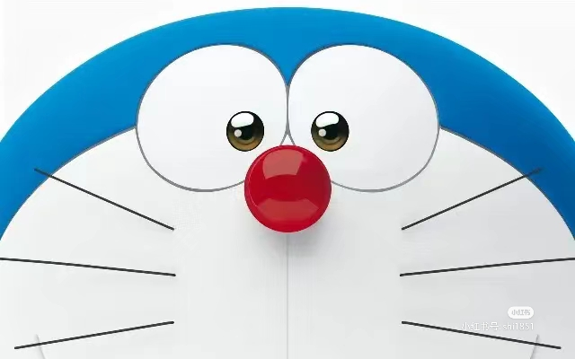

 藤子·F·不二雄（ふじこ·F·ふじお）（1933年12月1日—1996年9月23日），原名藤本弘，又名藤子不二雄F。日本男性漫画家，出生于日本富山县的高冈市，毕业于富山县立高冈工艺高等学校电气科。小学馆的代表漫画家之一，代表作《哆啦A梦》《Q太郎》《小超人帕门》《超能力魔美》。 曾经长期与另一位著名日本漫画家安孙子素雄（笔名藤子不二雄A）以藤子不二雄作为共用的笔名，先后在艰难的生存环境下画了十多年，并未造成太大热潮，直至实际上可以算是两个人最后的合作《Q太郎》。 1964年凭《Q太郎》一炮走红，从此奠定了他在日本漫画界的重要地位，而他的代表作《哆啦A梦》更掀起了无法抵挡的旋风，成为了成千上万儿童心目中永恒的经典，《哆啦A梦》为藤本弘的单人作品。 来自二十二世纪的蓝色机器猫哆啦A梦，受大雄的曾孙世修所托，通过时光机来到大雄小学的时候，要改变他的命运，把懒惰、没出息的大雄改变成为一个有用的人。 我们的毕业生中有成为央企高管的，有获得国家科技进步奖的，有创业成功身家不菲的，更有无数在不同岗位成就了职业梦想的。 大雄与哆啦A梦成为了好朋友。哆啦A梦的有一个神奇的四次元空间口袋，里面的道具可以千奇百怪，十分强大。在每次大雄需要帮助时，哆啦A梦就会出动他的道具去帮助大雄，但似乎每次都会弄巧成拙。